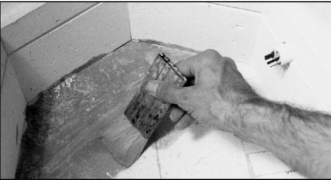

Käytä imurissa pehmeää harjasuulaketta. Imuroi vastusten urat, uunin kannen tai katon sisäpinta ja uunilevyjen alapuoli.
Imurointi on erittäin tärkeää jos saviesine on räjähtänyt uunissa. Poltetun saven murut urassa voivat rikkoa vastuksen.
Imuroidessasi tarkkaile onko lasin tai lasitteen siruja iskeytynyt tiiliin. Kaiva ne varovasti ulos vaikka ruuvimeisselin kärjellä.
1. kaada astiaan vettä ja erotusaineen jauhoa kunnes seos on sakeudeltaan
kahvikerman luokkaa. Sekoita kunnes paakut ovat liuenneet.
2. Levitä kolme ohutta kerrosta erotusainetta mieluummin kuin yksi paksu.
Käytä pientä pehmeää maalisivellintä. Anna uunin kuivua ennen polttoa.

Sivele uuninsuoja-ainetta uunin pohjaan.
Jos uunin seinissä on vastuksia, juojaa ne pahvilla siksi aikaa.
Jos erotusaine halkeilee tai hilseilee pois, lisää vain viallisiin kohtiin. Älä poista kaikkea erotusainetta ja päällystä uudelleen. Tämä on vain turhaa ja sottaista.
Varo roiskuttamasta erotusainetta seinien tiilille, erityisesti jos uunissasi on sivuvastuksia. Uunipesu tai erotusaine vahingoittaa vastuksia, usein jo seuraavassa poltossa.
Älä käytä erotusainetta fiiberiuuneissa. Aine on tarkoitettu vain tiilille ja uunilevyille.
Huom: Äläö sivele erotusainetta pohjaankaan, jos uunissasi on pohjavastuksia.